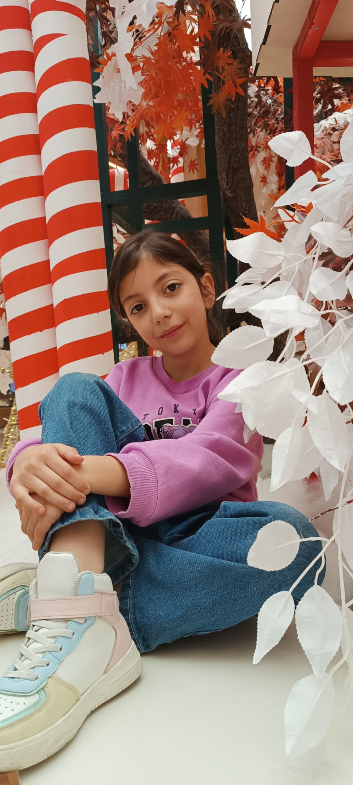

Բարև իմ սիրելի թոռնիկ։ Ես շատ երկար էի սպասել քո նամակին, բայց այս տարի որոշել եմ քեզ զարմացնել։ Դու շատ վատ ես սնվում և քեզ պետք է վիտամիններ, այս ամենով շատ համեղ ճաշիկներ կստացվեն ու ամեն անգամ ուտելով կհիշես ինձ, ուրեմն իմ սիրելի թոռնիկ խոստացիր որ այսուհետ ավել լավ ես սնվելու, իսկ հիմա գնա մյուս նվերներիտ ետևից, նրանք տաքնված են մահճակալի տակ։